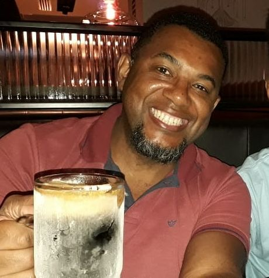
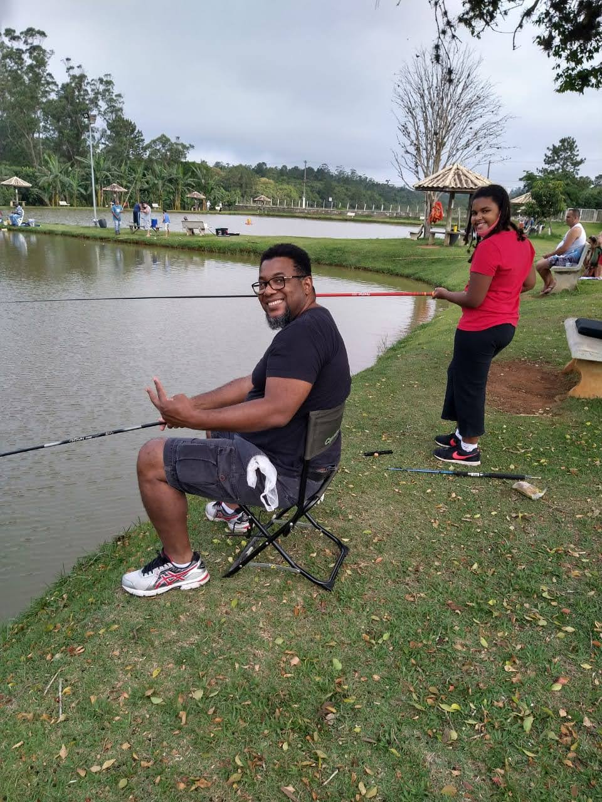
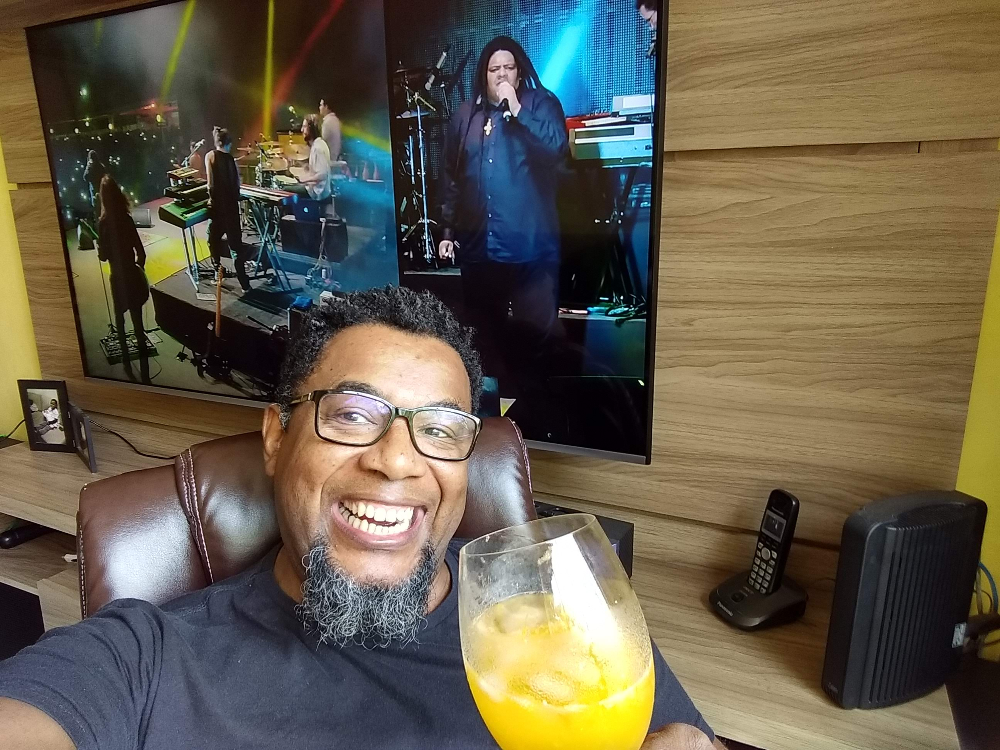
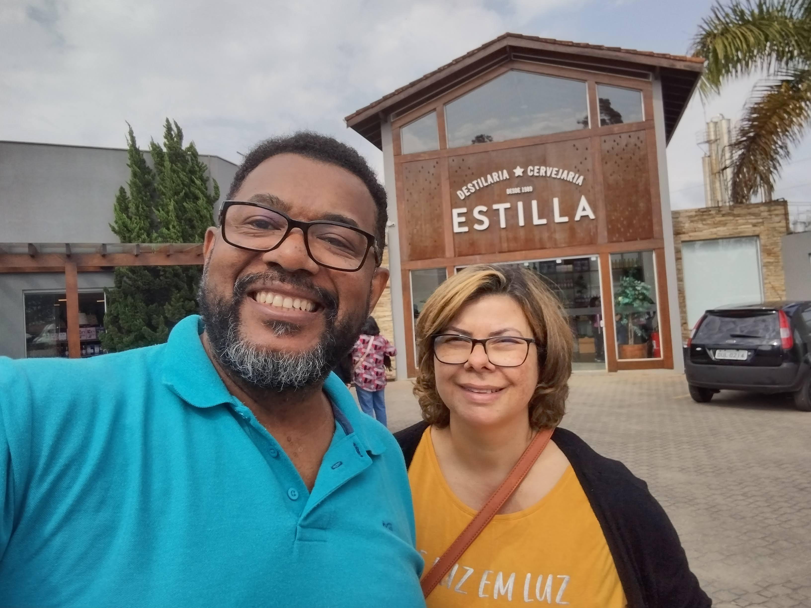
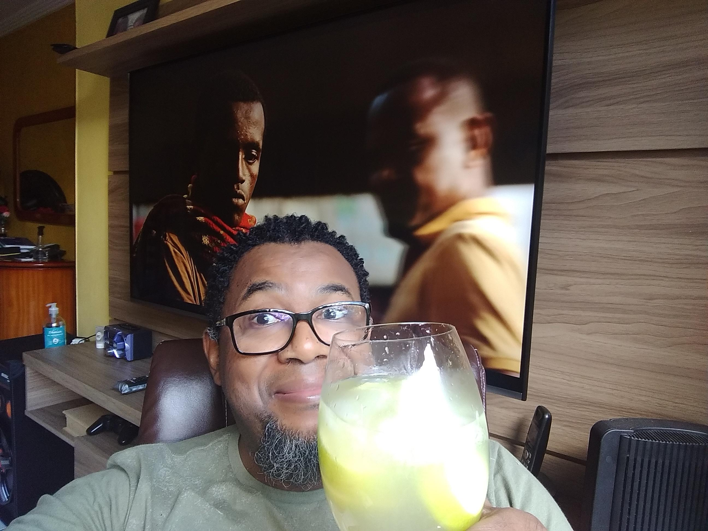
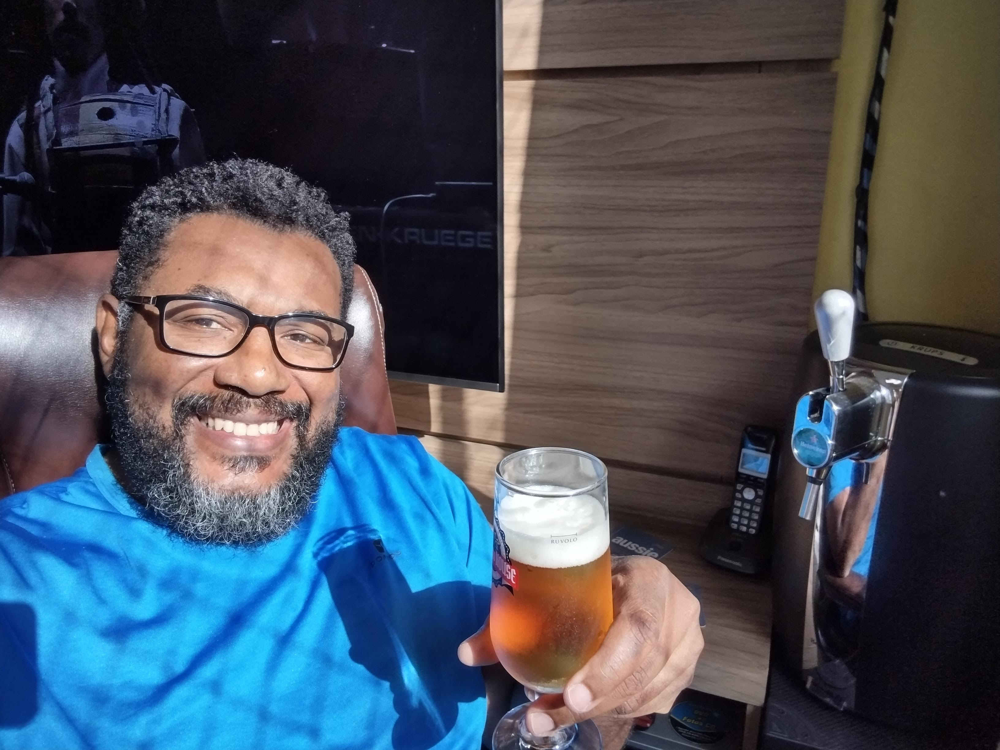

Sobre mim
Fauzer é uma pessoa radiante e cheia de energia positiva. Seu sorriso contagiante ilumina qualquer ambiente em que ele entra. Ele encara a vida com um otimismo contagiante, sempre encontrando motivos para agradecer e celebrar as pequenas coisas. Fauzer é grato pela saúde, pelas amizades e pelas oportunidades que a vida lhe oferece. Ele é uma pessoa confiante e determinada, que enfrenta desafios com serenidade e resiliência. Sua capacidade de adaptação e sua mentalidade aberta a novas experiências o tornam uma pessoa inspiradora para todos ao seu redor. Fauzer é generoso e está sempre disposta a ajudar os outros, demonstrando empatia e compaixão em todas as situações. Além disso, valoriza muito o equilíbrio entre corpo e mente. Pratica atividades físicas regularmente e se alimenta de forma saudável, buscando sempre o bem-estar integral. Ele também investe em seu crescimento pessoal e intelectual, buscando aprendizado constante e se mantendo aberta a novas ideias. Com um coração cheio de gratidão e uma mente aberta para o futuro.
Formação
Com uma formação educacional abrangente e diversificada, com uma base sólida em mecânica e produção industrial:
SENAI Ary Torres: Curso de Aprendiz de Torneiro: Este curso proporcionou conhecimentos essenciais na operação de tornos, uma máquina utilizada para dar forma a materiais através da remoção de material em excesso. Isso sugere uma habilidade prática e técnica no manuseio de equipamentos industriais. Especialização em Fresa: A especialização em fresa indica um aprofundamento nas técnicas de usinagem, em que um material é removido de uma peça através do movimento rotativo de uma ferramenta de corte. Essa especialização amplia ainda mais o conjunto de habilidades na área de usinagem.
SENAI Roberto Simeonsen: Curso Técnico em Mecânica: Esta formação forneceu um entendimento abrangente dos princípios da mecânica, incluindo conceitos teóricos e aplicação prática. Além disso, um curso técnico geralmente inclui aspectos práticos e laboratoriais, preparando o indivíduo para desafios reais do ambiente de trabalho.
FATEC São Paulo: Graduação em Processo de Produção: A graduação em Processo de Produção na FATEC São Paulo indica um aprofundamento em aspectos mais amplos da produção industrial. Isso pode envolver o estudo de métodos de otimização, gestão de processos, logística e outros aspectos fundamentais para a eficiência de uma linha de produção.
SENAI Suíço-Brasileira: Cursando Desenvolvimento de Sistemas: Este curso atual demonstra um interesse em expandir as habilidades para o campo da tecnologia da informação. O desenvolvimento de sistemas engloba a criação e manutenção de programas e softwares, o que é fundamental em uma variedade de setores. Com base nessa formação, essa pessoa apresenta uma combinação única de habilidades técnicas, teóricas e práticas em áreas cruciais da indústria, desde a operação de máquinas até a gestão de processos e o desenvolvimento de sistemas. Esse perfil é valioso em um ambiente industrial moderno que exige a integração de várias disciplinas para a produção eficiente e inovação tecnológica.
Hobbies
Eu sou uma pessoa que valoriza profundamente as experiências sensoriais e emocionais que a vida tem a oferecer, seja por meio da música, da culinária, das viagens ou do convívio familiar. Ela busca constantemente novas formas de enriquecer sua vida e compartilhar essas vivências com aqueles que ama.
|  |  |  |  |
|  |  |